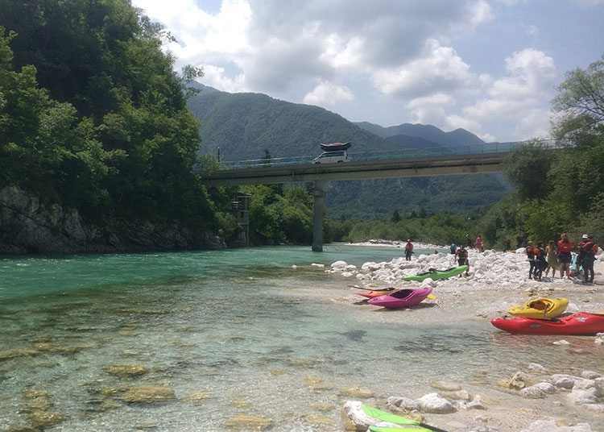

Scotland is quite simply great for Kayaking. The Highlands, Lowlands and the Borders are three distinct areas offering a diversity of rivers. However, most of the best rivers are North of the Highland boundary fault – a line running north-west from Loch Lomond past Stirling, Perth and up to Aberdeen. The Scottish Whitewater Guidebook covers some 200 rivers, and most of these are located here. There are Motorway and Dual Carriageway links to all these places, with high quality single carriageway trunk routes thereafter. The A82 up to Fort William passes the famous mountain rivers of Glen Orchy, Glencoe, Glen Etive and Glen Nevis, while the A9 at Stirling gives access to the rivers of the Trossachs. Onwards on the A9 at Perth brings you to Scotland’s largest river – the Tay at the International slalom course at Grandtully and onward to towards the ski-ing and outdoor centre at Aviemore and the Spey and the Findhorn. Past Inverness and you are near enough at the arctic.
Read MoreScotland Trip
